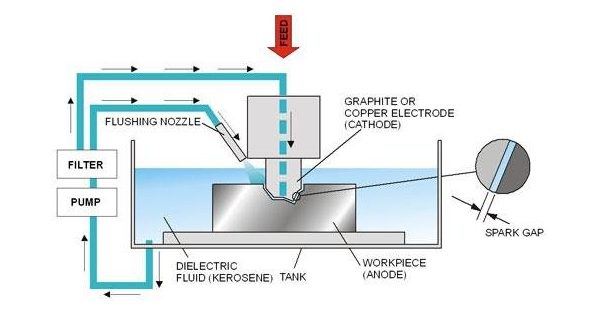
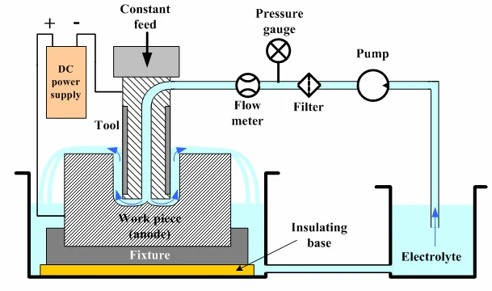
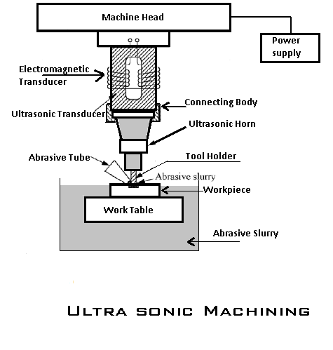
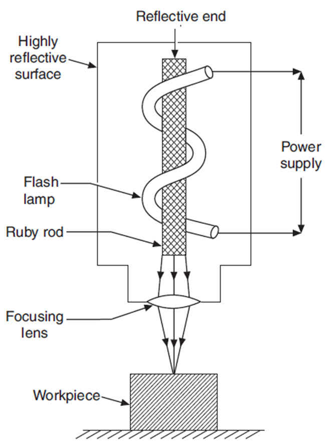
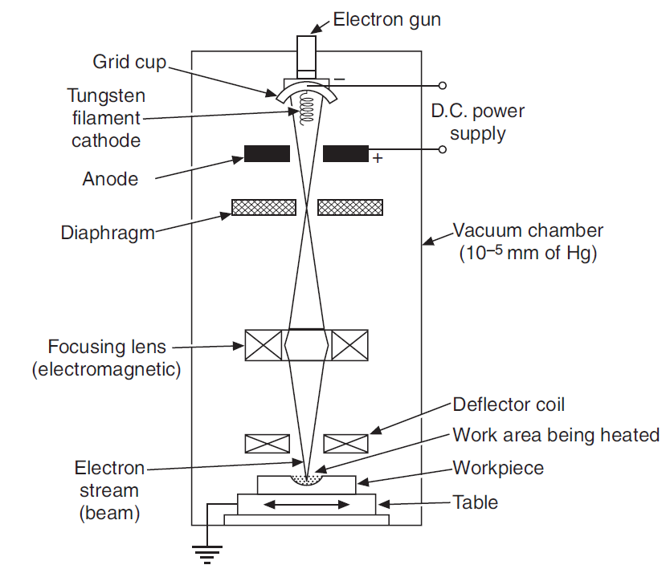

Principle: Material removed by thermal erosion from electrical spark discharges between tool (cathode) and workpiece (anode) in a dielectric fluid. Workpiece melts and vaporizes at spark locations; molten material expelled by spark pressure.
Polarity (Critical for Exams): Workpiece = anode (+), Tool = cathode (−). Reversing polarity dramatically increases tool wear and reduces metal removal rate. Standard polarity optimizes both MRR and tool life.
Dielectric Fluid: Kerosene or mineral oil (must be non-conducting, flash point ~200°C). Dielectric breaks down at high voltages (creates spark), fills gap between electrodes, cools eroded particles, removes debris from machining zone.
Gap Maintenance: Servo control maintains 0.02–0.1 mm gap automatically. Gap too large → spark cannot form (open circuit). Gap too small → tool and workpiece collide (short circuit). Automatic servo systems feed tool to maintain constant sparking distance.
Tool Material & Wear: Electrodes: copper, tungsten alloy, graphite. Tool wear rate depends on polarity; with standard polarity, EDM has moderate wear (higher than ECM, lower than USM mechanical wear). No material removal from tool in reverse polarity (workpiece is cathode).
Spark Frequency & Energy: Frequency ranges 20–200 kHz (higher frequency = shorter pulse, better accuracy, lower MRR). Energy per spark: 10–20 mJ (typical). Higher voltage and current increase MRR but reduce accuracy and tool life.
Applications: Complex cavities in hard conductive materials (die steels, tungsten carbide). Die-sinking (cavity-shaped electrode). Blind holes, internal passages. Surface finish: 3–6 μm Ra (good, but lower than ECM).

Principle: Material removed by anodic dissolution—electrochemical oxidation of workpiece at atomic level. Reverse of electroplating: workpiece oxidizes and dissolves into electrolyte, no tool wear occurs.
Polarity (Fixed): Workpiece = anode (+), Tool = cathode (−). Both must be electrical conductors. Polarity cannot be reversed (would stop the process).
Electrolyte: Aqueous salt solutions: NaCl, NaNO₃, Na₂SO₄. Conducts current between electrodes, dissolves anode material (workpiece), carries ions away. Must be continuously flushed to remove dissolved metallic ions and prevent concentration buildup.
Gap & Flow: Wider gap than EDM: 0.5–0.75 mm. Electrolyte pumped at high pressure (100–300 bar) through the gap. Pressure controls gap uniformity and removes reaction products (metal hydroxides, oxides).
Tool Wear: Negligible to zero. Cathode (tool) does not dissolve anodically. Same tool can produce thousands of parts. Tool must withstand electrolyte corrosion; typically copper, brass, stainless steel, or graphite (never diamond).
Material Removal Rate (Faraday's Law): $\text{MRR} = \frac{I \cdot M}{n \cdot F \cdot \rho}$. Where $I$ = current, $M$ = atomic weight, $n$ = number of electrons transferred, $F$ = Faraday's constant, $\rho$ = density. MRR proportional to current; independent of hardness (unlike conventional machining).
Surface Finish: Exceptional: 0.5–1 μm Ra (mirror finish). No thermal damage, no recast layer, no residual stress. Highest surface quality among unconventional processes.
Applications: Complex 3-D cavities in hard-to-machine alloys (titanium, nickel-based superalloys). Turbine blades, aerospace components. Non-ferrous and ferrous alloys. Cannot machine non-conducting materials.

Principle: Abrasive particles (boron carbide, diamond, silicon carbide) suspended in water are driven by ultrasonic vibration (20–40 kHz) to impact workpiece surface. Material removed by erosion and microchipping, not by heat or electrochemistry.
Tool & Workpiece Compatibility: Works on any material—conducting or non-conducting, hard or soft, brittle or ductile. Particularly suited for brittle materials (glass, ceramics, germanium, mica, quartz) where conventional machining causes cracking.
Tool Wear: Moderate mechanical wear; tool geometry degrades over time. Tool wear rate depends on abrasive hardness, workpiece hardness, and vibration amplitude. Tools are usually tungsten carbide, tool steel, or composite (with embedded abrasive).
Abrasive Slurry: Boron carbide (for glass, ceramics), diamond (for harder materials). Slurry concentration and viscosity affect MRR. Slurry recirculates and requires periodic replacement when worn-out abrasives accumulate.
Material Removal Rate: Lowest among EDM, ECM, USM. MRR ≈ 0.5–2 mm³/min for glass. MRR increases with frequency and amplitude but limited by workpiece brittleness (risk of cracking if amplitude too high).
Surface Finish & Depth of Cut: Finish: 1–3 μm Ra (reasonable). Depth of cut: up to 50 mm (deeper than EDM cavity limitation). Suited for micro-holes, complex patterns in brittle materials.
Applications: Precision holes in glass, sapphire, diamond, ceramics. Micromachining. Wave guides, optical lenses. Printed circuit boards (when non-conductive). No thermal effects → no thermal distortion.

Principle: Focused laser beam (wavelength λ ≈ 1 μm for CO₂, 0.1 μm for excimer) heats workpiece surface to vaporization temperature in microseconds. Material vaporizes or melts and is expelled by thermal pressure. No tool contact.
Laser Type & Workpiece Interaction: CO₂ lasers (10.6 μm) for non-metals (polymers, wood, composites), some metals. Nd:YAG and fiber lasers (1.06 μm) for metals and some ceramics. Beam absorption depends on surface color, texture, and wavelength.
Material Removal: No tool wear (no tool contact). All materials can theoretically be cut. Mechanism: vaporization (highest MRR), melting with melt ejection, or surface ablation (polymers, composites).
Precision & Kerf: Beam diameter: 0.1–1 mm. Cutting kerf: 0.1–0.5 mm (very narrow). Precision: ±0.05–0.1 mm for CO₂. Excellent for thin sheet cutting and fine details.
Thermal Effects: Heat-affected zone (HAZ) exists (typically 0.1–0.5 mm around cut). Workpiece edges may recast, oxidize, or char (for non-metals). Kerf has sloped sides (top wider than bottom) due to beam divergence.
Applications: Sheet cutting (steel, aluminum, composites, fabrics). Marking and engraving. Drilling micro-holes. Welding. Medical device manufacturing. Speed limited by heat conduction into workpiece (lower MRR than mechanical cutting but very precise).

Principle: High-energy electron beam (accelerated at 150–200 kV) focused on workpiece vaporizes material at beam spot. Mechanism: concentrated kinetic energy of electrons converted to heat. Requires vacuum (electrons scattered in air).
Environment: Vacuum chamber required (10⁻⁴ to 10⁻⁵ mbar). Vacuum prevents electron scattering and enables fine beam focusing. Setup cost very high.
Precision & Spot Size: Beam diameter: 0.05–0.5 μm (finest among thermal processes). Used for micro-drilling, ultra-precision machining.

Principle: High-velocity abrasive particles (aluminum oxide, silicon carbide) entrained in air/nitrogen jet directed at workpiece. Material removed by erosion, mechanical impact (no heat or chemical action).
Workpiece Compatibility: Works on all materials—metals, non-metals, composites, brittle ceramics. Particularly useful for non-conducting brittle materials (where EDM/ECM fail).
Material Removal Rate: Very low (lowest overall). Used for light finishing, marking, delicate cleaning. Not suitable for bulk material removal.
Capital Cost: Lowest among unconventional processes (simple air pump, nozzle, abrasive hopper).
Where: $V$ = voltage (kV), $I$ = current (A), $t_{\text{pulse}}$ = pulse duration (μs). Typical: 10–20 mJ per spark. Higher energy increases MRR but reduces accuracy.
MRR increases with current and pulse duration. Frequency (pulses/sec) also affects total MRR. Typical MRR: 10–100 mm³/min depending on conditions.
Where: $M$ = atomic weight (g/mol), $I$ = current (A), $n$ = number of electrons transferred (valence), $F$ = Faraday's constant (96,485 C/mol), $\rho$ = density (g/cm³). MRR directly proportional to current; independent of hardness.
Standard ultrasonic frequency. Tool vibrates perpendicular to workpiece at this frequency. Amplitude: 0.025–0.1 mm (very small displacements).
Where: $A$ = amplitude (mm), $\omega$ = angular frequency (rad/s), $f$ = frequency (kHz). Higher amplitude and frequency increase erosion rate.
Where: $P$ = laser power (W), $A_{\text{spot}}$ = spot area (mm²). Must exceed material's vaporization threshold. Typical: 1–10 MW/cm² for metals.
Where: $\lambda$ = wavelength (μm), $f$ = focal length (mm), $D$ = beam diameter before focusing (mm). CO₂: λ = 10.6 μm (larger spot). Nd:YAG: λ = 1.06 μm (smaller spot).
| Parameter | EDM | ECM | USM | LBM | EBM |
|---|---|---|---|---|---|
| Material Type | Electrical conductors only | Electrical conductors only | Any material (conducting or non-conducting) | All materials (depends on absorption) | All materials |
| Material Hardness Effect | Independent of hardness | Independent of hardness (per Faraday) | Harder materials → higher MRR | Independent of hardness | Independent of hardness |
| Tool Wear | Moderate (polarity-dependent) | Negligible to zero | Moderate (abrasive dulls) | None (no contact) | None (no contact) |
| MRR (Relative) | Medium (10–100 mm³/min) | Highest (100–1000 mm³/min) | Lowest (0.5–2 mm³/min) | Medium (1–50 mm³/min) | Very low (fine drilling only) |
| Surface Finish (Ra, μm) | 3–6 μm (good) | 0.5–1 μm (excellent, mirror) | 1–3 μm (reasonable) | 1–5 μm (depends on laser type) | 0.1–0.5 μm (ultra-fine) |
| Thermal Damage / HAZ | Recast layer (10–50 μm) | None (no thermal mechanism) | None (mechanical erosion only) | HAZ present (0.1–0.5 mm) | Minimal (ultra-high concentration) |
| Accuracy (mm) | ±0.05–0.1 | ±0.01–0.05 | ±0.05–0.1 | ±0.05–0.1 | ±0.001–0.01 |
| Typical Gap / Gap Control | 0.02–0.1 mm (servo-controlled) | 0.5–0.75 mm (pressure-maintained) | 0.2–0.5 mm (tool vibration) | 0 (contact-free) | 0 (contact-free, vacuum) |
| Workpiece Damage / Stress | Residual stress present (annealing may be needed) | No residual stress; excellent metallurgy | No thermal stress; mechanical micro-cracks possible in brittle | Thermal stress in HAZ | Minimal stress |
| Complex Geometry Capability | Excellent (die-sinking, blind cavities) | Excellent (3-D cavity, mirror shape of tool) | Good (through-holes, patterns) | Limited (line-of-sight cutting) | Limited (line-of-sight drilling) |
| Brittle Material Machining | Poor (requires conductivity, causes cracking) | Poor (requires conductivity) | Excellent (preferred for glass, ceramic) | Good (careful control needed) | Good (precise, no cracking) |
| Capital Cost | Medium–High | Very High (power supply, tooling, control system) | Low–Medium | Medium | Very High |
| Operating Cost | Medium (dielectric, electrode replacement) | Medium–High (electrolyte, waste disposal) | Low (abrasive replacement) | High (laser maintenance) | Very High (vacuum maintenance, electricity) |
| Special Environment | None (enclosed tank for safety) | None (enclosed, waste handling) | None (water splash containment) | Ventilation (fume extraction) | Vacuum chamber required |
| Typical Application | Dies, molds, turbine blades (hard steel) | Complex aerospace parts, superalloys, turbine blades | Micro-holes in glass, sapphire, ceramics | Sheet cutting, marking, thin profiles | Micro-drilling, ultra-precision components |
Revision Focus Areas (Frequency-Ranked):
1. EDM polarity & spark erosion | 2. ECM zero tool wear & Faraday's law | 3.
USM for brittle materials | 4. Process selection by workpiece property | 5. MRR
& surface finish comparison